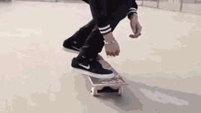

Stance
Stance in skateboarden is een cruciaal aspect dat de algemene stijl
en benadering van een skater bepaalt. De term "stance" verwijst naar
de positie van de voeten op het skateboard en hoe een skater zijn
gewicht verdeelt tijdens het rijden en uitvoeren van trucs. Een
veelvoorkomende onderscheiding in skateboardstance is tussen
"regular" en "goofy". Een skater staat "regular" als hij met zijn
linkervoet naar voren gericht staat, terwijl hij "goofy" staat als
zijn rechtervoet naar voren wijst. Deze basispositie beïnvloedt hoe
een skater zijn trucs uitvoert en de richting waarin hij draait. De
keuze van de stance hangt vaak af van de natuurlijke voorkeur van de
skater. Sommigen vinden het comfortabeler om met hun linkervoet voor
te staan, terwijl anderen de voorkeur geven aan hun rechtervoet. Het
ontwikkelen van een consistente stance is essentieel voor
stabiliteit en controle tijdens het skateboarden.
Hierlinks doet de icoon PJ Ladd een kickflip voor in alle stances


Regular, Switch, Fakie of Nollie?
Het eerste wat je leert in skateboarden, je stance! eigenlijk weet
iedereen onderbewust al hoe die op een skateboard wilt staan. Mijn
persoonlijke methode om hier voor iemand achter te komen? geef
diegene een zet op het board.
Zet diegene ze linkervoet voor? "Regular" stance. Rechtervoet voor?
"goofy" stance.
Geen van de twee is beter, maar wel anders.
Het is een beetje net als rechts of linkshandig zijn, of rechts of
links benig.
Links en rechts zie je dezelfde kickflip, maar let op welke voet er
voor staat bij de skater.
Op de linker zie je regular stance en links goofy.

Frontside (fs) vs Backside (bs)
"Frontside" en "backside" zijn termen die worden gebruikt om de
richting aan te geven waarin een skateboardtruc wordt uitgevoerd ten
opzichte van de rijrichting van de skater. "Frontside" verwijst naar
een truc waarbij de skater zich met zijn of haar frontale lichaam
richting de obstakel of de richting van de trick draait.
Bijvoorbeeld, bij een "frontside 180" draait de skater 180 graden
met de voorkant van het lichaam naar het obstakel of de richting van
de draai. "Backside" daarentegen betekent dat de skater zich met
zijn of haar rug naar het obstakel of de draairichting keert. Dus
bij een "backside 180" draait de skater 180 graden met de rug naar
het obstakel of de draairichting.
Links zie je een Frontside 180 (een draai) en Rechts een Frontside
50-50 (een grind)
Bij een rotatie gaat het dus om hoe je draait, en bij een
grind/slide gaat het erom vanaf welke kant van het object je aankomt
voor de grind/slide

50-50 grind
Aangekomen bij de eerste grind, te gek! We hebben hier als eerst te maken met de iconische 50-50 grind. Maak je geen zorgen, je hoeft deze trick niet meteen zo groots te doen als op de video hiernaast. Een 50-50 is simpelweg wanneer de trucks van je board, het metaal (of ander materiaal) schraapt van een Ledge of rail. Je rijdt dus niet op je wielen, maar je schraapt als het ware over dit stuk materiaal met je trucks!

Boardslide
Nu gaan we het hebben over de boardslide, een te gekke trick! Bij een boardslide glijd je met het deck van je skateboard over een rail of rand. Het is een coole move waarbij je skateboard parallel aan de rail of rand blijft terwijl je eroverheen glijdt. Probeer deze trick rustig te oefenen voordat je achterover glijdt op de rail!. Sommige mensen gebruiken ook speciale latjes onder hun board zodat de kunst op de onderkant niet verloren gaat.